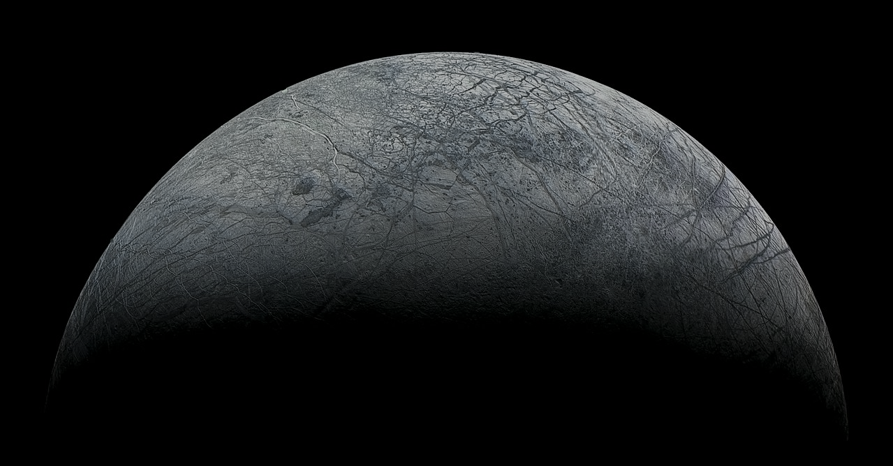

Юпитер

Юпи́тер — крупнейшая планета Солнечной системы, пятая по удалённости от Солнца. Наряду с Сатурном, Ураном и Нептуном, Юпитер классифицируется как газовый гигант.
Планета была известна людям с глубокой древности, что нашло своё отражение в мифологии и религиозных верованиях различных культур: месопотамской, вавилонской, греческой и других. Современное название Юпитера происходит от имени древнеримского верховного бога-громовержца.
Ряд атмосферных явлений на Юпитере: штормы, молнии, полярные сияния, — имеет масштабы, на порядки превосходящие земные. Примечательным образованием в атмосфере является Большое красное пятно — гигантский шторм, известный с XVII века.
Юпитер имеет, по крайней мере, 79 спутников, самые крупные из которых — Ио, Европа, Ганимед и Каллисто — были открыты Галилео Галилеем в 1610 году.
Исследования Юпитера проводятся при помощи наземных и орбитальных телескопов; с 1970-х годов к планете было отправлено 8 межпланетных аппаратов НАСА: «Пионеры», «Вояджеры», «Галилео» и другие.
Во время великих противостояний (одно из которых происходило в сентябре 2010 года) Юпитер виден невооружённым глазом как один из самых ярких объектов на ночном небосклоне после Луны и Венеры. Диск и спутники Юпитера являются популярными объектами наблюдения для астрономов-любителей , сделавших ряд открытий (например, кометы Шумейкеров-Леви, которая столкнулась с Юпитером в 1994 году, или исчезновения Южного экваториального пояса Юпитера в 2010 году) .
Европа

Евро́па или Юпитер II — шестой спутник Юпитера, наименьший из четырёх галилеевых спутников. Обнаружена в 1610 году Галилео Галилеем и, вероятно, Симоном Марием в то же самое время. На протяжении столетий за Европой велись всё более всесторонние наблюдения при помощи телескопов, а начиная с семидесятых годов двадцатого века — и пролетающих вблизи космических аппаратов.
По размерам уступая Луне, Европа состоит в основном из силикатных пород, а в центре содержит железное ядро. Поверхность состоит изо льда и является одной из самых гладких в Солнечной системе; на ней очень мало кратеров, но много трещин. Легко заметная молодость и гладкость поверхности привели к гипотезе, что под ней находится водяной океан, в котором не исключено наличие микроскопической жизни. Вероятно, он не замерзает благодаря приливным силам, периодические изменения которых вызывают деформацию спутника и, как следствие, нагрев его недр. Это же служит причиной эндогенной геологической активности Европы, напоминающей тектонику плит. У спутника есть крайне разрежённая атмосфера, состоящая в основном из кислорода.
Интересные характеристики Европы, особенно возможность обнаружения внеземной жизни, привели к целому ряду предложений по исследованиям спутника. Миссия космического аппарата «Галилео», начавшаяся в 1989 году, предоставила большую часть современных данных о Европе. В бюджете NASA на 2016 год выделены средства на разработку автоматической межпланетной станции Europa Clipper, предназначенной для изучения Европы на предмет её обитаемости, запуск наиболее вероятен в середине 2020-х гг. Запуск аппарата для изучения ледяных спутниковЮпитера, Jupiter Icy Moon Explorer (JUICE), запланирован на 2022 год.
Так же европа один из наиболее вероятных мест обитания жизни